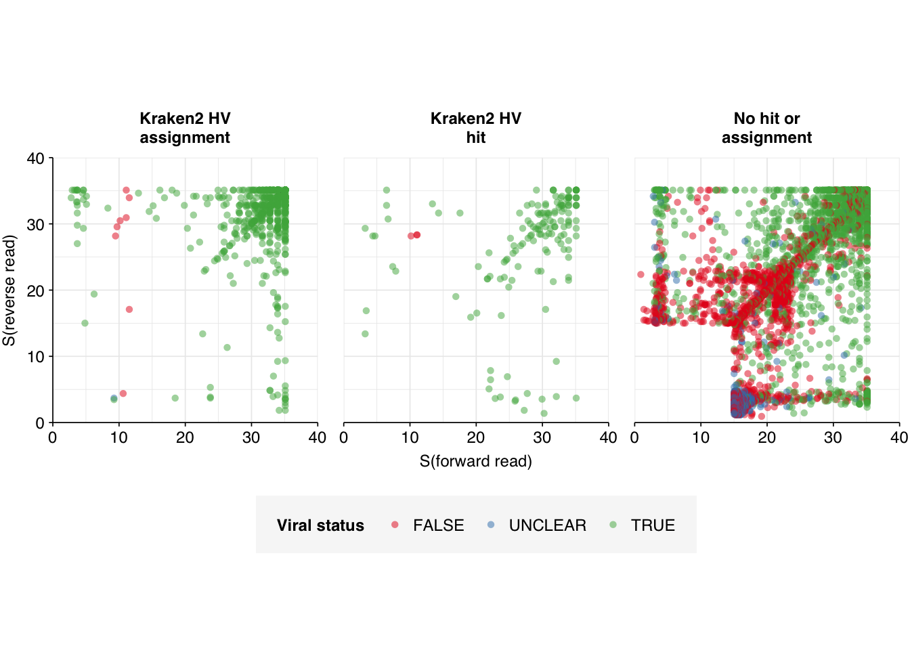

Abundance and composition of human-infecting viruses.
Author
Will Bradshaw
Published
January 23, 2024
In my last entry, I described the process of analyzing Crits-Christoph et al. (2021) data with my Nextflow workflow, up to and including high-level taxonomic analysis. In this entry, I’ll look more deeply at the human-infecting-virus content of these data, and address some inadequacies in that pipeline that were causing issues in analyzing those reads.
To begin with, I analyzed the human-infecting virus reads in Crits-Christoph in an identical manner to my previous analysis of our BMC data, making use of the automated BLAST characterization approach developed in a previous entry.
The process for identifying human-viral (HV) reads was similar to that described in my last two entries:
After removing human and livestock reads with BBMap, the remaining reads were aligned to a DB of human-infecting virus genomes with Bowtie2, using permissive alignment parameters. This retained roughly 0.3% to 0.4% of surviving reads (57k to 130k reads) for unenriched samples and 1% to 67% (650 to 25k reads) for enriched samples.
Reads that aligned successfully with Bowtie2 were run through Kraken2 (using the standard 16GB database) and reads that were assigned to any non-human-virus taxon were excluded. This retained roughly 0.17% to 0.29% of surviving reads (30k to 81k reads) for unenriched samples, and made little difference to the enriched samples.
For surviving reads, the length-adjusted alignment score \(S=\frac{\text{bowtie2 alignment score}}{\ln(\text{read length})}\) was calculated, and reads were filtered out if they didn’t meet at least one of the following four criteria:
The read pair is assigned to a human-infecting virus by both Kraken and Bowtie2
The read pair contains a Kraken2 hit to the same taxid as it is assigned to by Bowtie2.
The read pair is unassigned by Kraken and \(S>15\) for the forward read
The read pair is unassigned by Kraken and \(S>15\) for the reverse read
Applying all of these filtering steps leaves a total of 7042 read pairs across all unenriched samples (0.004% of surviving reads) and >110,000 read pairs across all enriched samples (4% of surviving reads):
I previously assessed potential criteria for designating a read as human-viral based on \(S\) and Kraken assignment status, and found that a disjunctive threshold of \(S \geq 20\) (i.e. passing a read pair if either the forward or reverse read had an adjusted alignment score of at least 20) achieved the best performance. To test whether this remains the case across datasets, I BLASTed the 7042 putative HV reads from the unenriched data against nt using blastn -remote as described previously. I then assigned “ground-truth” viral status to each read pair as follows: [TODO:update criteria]
If both the forward and reverse reads from a read pair align to the same viral taxid (while passing filters on query coverage, percent identity, etc), classify that read pair as human viral.
If only one of the reads in a read pair aligns to the same viral taxid as that identified by Kraken/Bowtie, classify that read pair as human viral.
Otherwise, if only one of the reads in a read pair aligns to any given viral taxid, flag the read for manual inspection.
If neither read aligns to a viral taxid, classify that read pair as non-human-viral.
Warning: One or more parsing issues, call `problems()` on your data frame for details,
e.g.:
dat <- vroom(...)
problems(dat)
Code
# Define taxid search functionexpand_taxids<-function(taxids_in, nodes){taxids_out<-taxids_intaxids_new<-filter(nodes, parent_taxid%in%taxids_out, !child_taxid%in%taxids_out)%>%pull(child_taxid)%>%sortwhile(length(taxids_new)>0){taxids_out<-c(taxids_out, taxids_new)%>%sorttaxids_new<-filter(nodes, parent_taxid%in%taxids_out, !child_taxid%in%taxids_out)%>%pull(child_taxid)%>%sort}return(taxids_out)}v_taxids<-expand_taxids(c(10239, hv_taxids$taxid), tax_nodes)# Import BLAST results#blast_results_path <- file.path(data_dir, "cc-unenriched-out.blast.gz")blast_results_path<-file.path(data_dir, "cat-cc-unenriched.blast.gz")blast_cols<-c("qseqid", "sseqid", "sgi", "staxid", "qlen", "evalue", "bitscore", "qcovs", "length", "pident", "mismatch", "gapopen", "sstrand", "qstart", "qend", "sstart", "send")blast_results<-read_tsv(blast_results_path, show_col_types =FALSE, col_names =blast_cols, col_types =cols(.default="c"))# Add viral statusblast_results_viral<-mutate(blast_results, viral =staxid%in%v_taxids)# Filter for the best hit for each sequence and taxidblast_results_best<-blast_results_viral%>%group_by(qseqid, staxid)%>%filter(bitscore==max(bitscore))%>%filter(length==max(length))%>%filter(row_number()==1)# Rank hits for each sequenceblast_results_ranked<-blast_results_best%>%group_by(qseqid)%>%mutate(rank =dense_rank(desc(bitscore)))# Filter by rankblast_results_highrank<-blast_results_ranked%>%filter(rank<=5)# Summarize by read pair and taxidblast_results_paired<-blast_results_highrank%>%separate(qseqid, c("sample", "seq_num", "read_pair"), "_")%>%group_by(sample, seq_num, staxid, viral)%>%mutate(bitscore =as.numeric(bitscore), seq_num =as.numeric(seq_num))%>%summarize(bitscore_max =max(bitscore), bitscore_min =min(bitscore), n_reads =n(), .groups ="drop")%>%mutate(viral_full =viral&n_reads==2)# Compare to Kraken & Bowtie assignmentsmrg_assign<-mrg%>%filter(enrichment=="Unenriched")%>%select(sample, seq_num, taxid, assigned_taxid)blast_results_assign<-left_join(blast_results_paired, mrg_assign, by=c("sample", "seq_num"))%>%mutate(taxid_match_bowtie =(staxid==taxid), taxid_match_kraken =(staxid==assigned_taxid), taxid_match_any =taxid_match_bowtie|taxid_match_kraken)blast_results_out<-blast_results_assign%>%group_by(sample, seq_num)%>%summarize(viral_status =ifelse(any(viral_full), 2,ifelse(any(taxid_match_any), 2,ifelse(any(viral), 1, 0))), .groups ="drop")# Merge with unenriched read datamrg_unenriched<-mrg%>%filter(enrichment=="Unenriched")%>%full_join(blast_results_out, by=c("sample", "seq_num"))%>%mutate(viral_status =replace_na(viral_status, 0))# Import Bowtie2/Kraken data and perform filtering stepsmrg_unenriched_plot<-mrg_unenriched%>%mutate(viral_status_out =ifelse(viral_status==0, "FALSE",ifelse(viral_status==1, "UNCLEAR", "TRUE")), viral_status_out =factor(viral_status_out, levels =c("FALSE", "UNCLEAR", "TRUE")))g_mrg_v<-mrg_unenriched_plot%>%ggplot(aes(x=adj_score_fwd, y=adj_score_rev, color=viral_status_out))+geom_point(alpha=0.5, shape=16)+scale_x_continuous(name="S(forward read)", limits=c(0,40), breaks=seq(0,100,10), expand =c(0,0))+scale_y_continuous(name="S(reverse read)", limits=c(0,40), breaks=seq(0,100,10), expand =c(0,0))+scale_color_brewer(palette ="Set1", name ="Viral status")+facet_wrap(~kraken_label, labeller =labeller(kit =label_wrap_gen(20)))+theme_base+theme(aspect.ratio=1)g_mrg_v

Off the bat, it’s clear this approach isn’t working well. There are almost 1,000 “UNCLEAR” data points that need manual inspection; worse, there appear to be numerous nonviral sequences achieving very high normalized Bowtie2 alignment scores:
Inspecting these high-scoring non-viral reads, we see that they are dominated by a few specific genome IDs: the top five genome IDs account for over 75% of high-scoring false-positives, and all of the top 10 overwhelmingly produce false rather than true positives.
Inspecting these top genome IDs more closely, we notice something interesting: many of them are transgenic. When we try BLASTing read pairs mapping to these transgenic sequences against nt with NCBI’s online tool, we find that the best matches are all to bacterial plasmids, cloning vectors and synthetic constructs. This suggests a clear culprit for a large fraction of the false positives we are seeing here: contamination of the Bowtie2 reference database with non-viral sequences inserted into transgenic viruses.
Excluding “transgenic” and “mutant” genome IDs is predicted to remove 77% of the high-scoring false positives observed above. This left a small enough number of sequences to characterize manually using NCBI BLAST. When we do this, we see the following breakdown of causes:
By far the most important attributable causes for misidentification of viral reads are:
Mapping to the human genome or human-derived synthetic constructs
Mapping to the E. coli genome
Mapping to cow or pig genomes
This suggests (1) that the current filtering to remove human and cow/pig sequences is insufficiently stringent, and (2) that adding E. coli and possibly one or more eukaryotic synthetic constructs to the database of contaminants to screen for could go a long way toward removing remaining false positives.
Finally, it’s worth noting that a significant fraction of these sequences appear to be Bowtie true-positives that were falsely annotated as negatives by my automated BLAST analysis above. I’m not yet sure what’s underlying this, but it gives me some confidence that, if I can fix the issues outlined above, the general approach of this pipeline is still viable.
---title: "Workflow analysis of Crits-Christoph et al. (2021), part 2"subtitle: "Abundance and composition of human-infecting viruses."author: "Will Bradshaw"date: 2024-01-23format: html: code-fold: true code-tools: true code-link: true df-print: pagededitor: visualtitle-block-banner: blackdraft: true---```{r}#| label: load-packages#| include: falselibrary(tidyverse)library(cowplot)library(patchwork)library(fastqcr)library(RColorBrewer)source("../scripts/aux_plot-theme.R")theme_base <- theme_base +theme(aspect.ratio =NULL)theme_kit <- theme_base +theme(axis.text.x =element_text(hjust =1, angle =45),axis.title.x =element_blank(),)tnl <-theme(legend.position ="none")```In my last entry, I described the process of analyzing [Crits-Christoph et al. (2021)](https://doi.org/10.1128%2FmBio.02703-20) data with my [Nextflow workflow](https://github.com/naobservatory/mgs-workflow), up to and including high-level taxonomic analysis. In this entry, I'll look more deeply at the human-infecting-virus content of these data, and address some inadequacies in that pipeline that were causing issues in analyzing those reads.To begin with, I analyzed the human-infecting virus reads in Crits-Christoph in an identical manner to my [previous analysis](https://data.securebio.org/wills-public-notebook/notebooks/2023-12-22_bmc-rna-sequel.html) of our BMC data, making use of the automated BLAST characterization approach developed in a [previous entry](https://data.securebio.org/wills-public-notebook/notebooks/2024-01-30_blast-validation.html).```{r}# Data input pathsdata_dir <-"../data/2024-02-04_crits-christoph-2/"libraries_path <-file.path(data_dir, "cc-libraries.txt")basic_stats_path <-file.path(data_dir, "qc_basic_stats.tsv")hv_reads_all_path <-file.path(data_dir, "hv_hits_putative_all.tsv.gz")hv_reads_filtered_path <-file.path(data_dir, "hv_hits_putative_filtered.tsv.gz")# Import datastages <-c("raw_concat", "cleaned", "dedup", "ribo_initial", "remove_human", "remove_other", "ribo_secondary")libraries <-read_tsv(libraries_path, show_col_types =FALSE) %>%mutate(enrichment =str_to_title(enrichment))basic_stats <-read_tsv(basic_stats_path, show_col_types =FALSE) %>%inner_join(libraries, by="sample") %>%arrange(enrichment, location, collection_date) %>%mutate(stage =factor(stage, levels = stages),sample =fct_inorder(sample))hv_reads_all <-read_tsv(hv_reads_all_path, show_col_types =FALSE) %>%inner_join(libraries, by="sample") %>%arrange(enrichment, location, collection_date) %>%mutate(sample =fct_inorder(sample))hv_reads_filtered_1 <- hv_reads_all %>%filter(!classified | assigned_hv)hv_reads_filtered <-read_tsv(hv_reads_filtered_path, show_col_types =FALSE) %>%inner_join(libraries, by="sample") %>%arrange(enrichment, location, collection_date) %>%mutate(sample =fct_inorder(sample))# Countn_hv_reads_all <- hv_reads_all %>%group_by(sample, location, method, enrichment) %>% count %>%inner_join(basic_stats %>%filter(stage =="remove_other") %>%select(sample, n_read_pairs), by="sample") %>%rename(n_putative = n, n_total = n_read_pairs) %>%mutate(p_reads = n_putative/n_total, pc_reads = p_reads *100)n_hv_filtered_1 <- hv_reads_filtered_1 %>%group_by(sample, location, method, enrichment) %>% count %>%rename(n_filtered_1 = n) %>%inner_join(n_hv_reads_all, by=c("sample", "location", "method", "enrichment")) %>%mutate(p_reads = n_filtered_1/n_total, pc_reads = p_reads*100)n_hv_filtered <- hv_reads_filtered %>%group_by(sample, location, method, enrichment) %>% count %>%inner_join(basic_stats %>%filter(stage =="remove_other") %>%select(sample, n_read_pairs), by="sample") %>%rename(n_putative = n, n_total = n_read_pairs) %>%mutate(p_reads = n_putative/n_total, pc_reads = p_reads *100)```The process for identifying human-viral (HV) reads was similar to that described in my last two entries:1. After removing human and livestock reads with BBMap, the remaining reads were aligned to a DB of human-infecting virus genomes with Bowtie2, using permissive alignment parameters. This retained roughly 0.3% to 0.4% of surviving reads (57k to 130k reads) for unenriched samples and 1% to 67% (650 to 25k reads) for enriched samples.2. Reads that aligned successfully with Bowtie2 were run through Kraken2 (using the standard 16GB database) and reads that were assigned to any non-human-virus taxon were excluded. This retained roughly 0.17% to 0.29% of surviving reads (30k to 81k reads) for unenriched samples, and made little difference to the enriched samples.3. For surviving reads, the length-adjusted alignment score $S=\frac{\text{bowtie2 alignment score}}{\ln(\text{read length})}$ was calculated, and reads were filtered out if they didn't meet at least one of the following four criteria: - The read pair is *assigned* to a human-infecting virus by both Kraken and Bowtie2 - The read pair contains a Kraken2 *hit* to the same taxid as it is assigned to by Bowtie2. - The read pair is unassigned by Kraken and $S>15$ for the forward read - The read pair is unassigned by Kraken and $S>15$ for the reverse readApplying all of these filtering steps leaves a total of 7042 read pairs across all unenriched samples (0.004% of surviving reads) and \>110,000 read pairs across all enriched samples (4% of surviving reads):```{r}#| warning: false#| fig-width: 8#| fig-height: 8mrg <- hv_reads_filtered %>%mutate(kraken_label =ifelse(assigned_hv, "Kraken2 HV\nassignment",ifelse(hit_hv, "Kraken2 HV\nhit","No hit or\nassignment"))) %>%group_by(sample) %>%arrange(desc(adj_score_fwd), desc(adj_score_rev)) %>%mutate(seq_num =row_number())# Import Bowtie2/Kraken data and perform filtering stepsg_mrg <-ggplot(mrg, aes(x=adj_score_fwd, y=adj_score_rev)) +geom_point(alpha=0.5, shape=16) +scale_x_continuous(name="S(forward read)", limits=c(0,40), breaks=seq(0,100,10), expand =c(0,0)) +scale_y_continuous(name="S(reverse read)", limits=c(0,40), breaks=seq(0,100,10), expand =c(0,0)) +facet_grid(kraken_label~enrichment, labeller =labeller(kit =label_wrap_gen(20))) + theme_base +theme(aspect.ratio=1)g_mrg```I previously assessed potential criteria for designating a read as human-viral based on $S$ and Kraken assignment status, and found that a disjunctive threshold of $S \geq 20$ (i.e. passing a read pair if either the forward or reverse read had an adjusted alignment score of at least 20) achieved the best performance. To test whether this remains the case across datasets, I BLASTed the 7042 putative HV reads from the unenriched data against nt using `blastn -remote` as [described previously](https://data.securebio.org/wills-public-notebook/notebooks/2024-01-30_blast-validation.html). I then assigned "ground-truth" viral status to each read pair as follows: **\[TODO:update criteria\]**1. If both the forward and reverse reads from a read pair align to the **same viral taxid** (while passing filters on query coverage, percent identity, etc), classify that read pair as human viral.2. If only one of the reads in a read pair aligns to the same viral taxid as that identified by Kraken/Bowtie, classify that read pair as human viral.3. Otherwise, if only one of the reads in a read pair aligns to any given viral taxid, flag the read for manual inspection.4. If neither read aligns to a viral taxid, classify that read pair as non-human-viral.```{r}# Import files for viral taxid searchhv_taxids_path <-file.path(data_dir, "human-virus-taxids-all.txt")tax_nodes_path <-file.path(data_dir, "nodes.dmp.gz")hv_taxids <-read_tsv(hv_taxids_path, show_col_types =FALSE, col_names ="taxid")tax_nodes <-read_delim(tax_nodes_path, delim ="\t|\t", show_col_types =FALSE, col_names =FALSE) %>%select(X1:X3) %>%rename(child_taxid = X1, parent_taxid = X2, rank = X3)# Define taxid search functionexpand_taxids <-function(taxids_in, nodes){ taxids_out <- taxids_in taxids_new <-filter(nodes, parent_taxid %in% taxids_out, !child_taxid %in% taxids_out) %>%pull(child_taxid) %>% sortwhile (length(taxids_new) >0){ taxids_out <-c(taxids_out, taxids_new) %>% sort taxids_new <-filter(nodes, parent_taxid %in% taxids_out, !child_taxid %in% taxids_out) %>%pull(child_taxid) %>% sort }return(taxids_out)}v_taxids <-expand_taxids(c(10239, hv_taxids$taxid), tax_nodes)# Import BLAST results#blast_results_path <- file.path(data_dir, "cc-unenriched-out.blast.gz")blast_results_path <-file.path(data_dir, "cat-cc-unenriched.blast.gz")blast_cols <-c("qseqid", "sseqid", "sgi", "staxid", "qlen", "evalue", "bitscore", "qcovs", "length", "pident", "mismatch", "gapopen", "sstrand", "qstart", "qend", "sstart", "send")blast_results <-read_tsv(blast_results_path, show_col_types =FALSE, col_names = blast_cols,col_types =cols(.default="c"))# Add viral statusblast_results_viral <-mutate(blast_results, viral = staxid %in% v_taxids)# Filter for the best hit for each sequence and taxidblast_results_best <- blast_results_viral %>%group_by(qseqid, staxid) %>%filter(bitscore ==max(bitscore)) %>%filter(length ==max(length)) %>%filter(row_number() ==1)# Rank hits for each sequenceblast_results_ranked <- blast_results_best %>%group_by(qseqid) %>%mutate(rank =dense_rank(desc(bitscore)))# Filter by rankblast_results_highrank <- blast_results_ranked %>%filter(rank <=5)# Summarize by read pair and taxidblast_results_paired <- blast_results_highrank %>%separate(qseqid, c("sample", "seq_num", "read_pair"), "_") %>%group_by(sample, seq_num, staxid, viral) %>%mutate(bitscore =as.numeric(bitscore), seq_num =as.numeric(seq_num)) %>%summarize(bitscore_max =max(bitscore), bitscore_min =min(bitscore), n_reads =n(), .groups ="drop") %>%mutate(viral_full = viral & n_reads ==2)# Compare to Kraken & Bowtie assignmentsmrg_assign <- mrg %>%filter(enrichment =="Unenriched") %>%select(sample, seq_num, taxid, assigned_taxid)blast_results_assign <-left_join(blast_results_paired, mrg_assign, by=c("sample", "seq_num")) %>%mutate(taxid_match_bowtie = (staxid == taxid),taxid_match_kraken = (staxid == assigned_taxid),taxid_match_any = taxid_match_bowtie | taxid_match_kraken)blast_results_out <- blast_results_assign %>%group_by(sample, seq_num) %>%summarize(viral_status =ifelse(any(viral_full), 2,ifelse(any(taxid_match_any), 2,ifelse(any(viral), 1, 0))),.groups ="drop")# Merge with unenriched read datamrg_unenriched <- mrg %>%filter(enrichment =="Unenriched") %>%full_join(blast_results_out, by=c("sample", "seq_num")) %>%mutate(viral_status =replace_na(viral_status, 0))# Import Bowtie2/Kraken data and perform filtering stepsmrg_unenriched_plot <- mrg_unenriched %>%mutate(viral_status_out =ifelse(viral_status ==0, "FALSE",ifelse(viral_status ==1, "UNCLEAR", "TRUE")),viral_status_out =factor(viral_status_out, levels =c("FALSE", "UNCLEAR", "TRUE")))g_mrg_v <- mrg_unenriched_plot %>%ggplot(aes(x=adj_score_fwd, y=adj_score_rev, color=viral_status_out)) +geom_point(alpha=0.5, shape=16) +scale_x_continuous(name="S(forward read)", limits=c(0,40), breaks=seq(0,100,10), expand =c(0,0)) +scale_y_continuous(name="S(reverse read)", limits=c(0,40), breaks=seq(0,100,10), expand =c(0,0)) +scale_color_brewer(palette ="Set1", name ="Viral status") +facet_wrap(~kraken_label, labeller =labeller(kit =label_wrap_gen(20))) + theme_base +theme(aspect.ratio=1)g_mrg_v```Off the bat, it's clear this approach isn't working well. There are almost 1,000 "UNCLEAR" data points that need manual inspection; worse, there appear to be numerous nonviral sequences achieving very high normalized Bowtie2 alignment scores:```{r}mrg_unenriched_debug <- mrg_unenriched_plot %>%mutate(adj_score_max =pmax(adj_score_fwd, adj_score_rev))g_hist <-ggplot(mrg_unenriched_debug, aes(x=adj_score_max)) +geom_histogram(binwidth=5,boundary=0) +facet_wrap(~viral_status_out) +scale_x_continuous(name ="Maximum adjusted alignment score") +scale_y_continuous(name="# Read pairs") + theme_baseg_hist```Inspecting these high-scoring non-viral reads, we see that they are dominated by a few specific genome IDs: the top five genome IDs account for over 75% of high-scoring false-positives, and all of the top 10 overwhelmingly produce false rather than true positives.```{r}header_path <-file.path(data_dir, "human-viral-headers.txt")header_db <-read_tsv(header_path, show_col_types =FALSE,col_names =c("genome_id", "genome_name"))mrg_unenriched_genomes <-full_join(mrg_unenriched_debug, header_db, by="genome_id")bad_genomes <- mrg_unenriched_genomes %>%filter(adj_score_max >=20) %>%group_by(genome_id, genome_name, viral_status_out) %>%count() %>%pivot_wider(names_from=viral_status_out, values_from=n, names_prefix ="n_") %>%filter(n_FALSE >0) %>%arrange(desc(n_FALSE)) %>%select(genome_id, genome_name, n_FALSE, n_TRUE, n_UNCLEAR) %>%mutate(n_TRUE =replace_na(n_TRUE, 0), n_UNCLEAR =replace_na(n_UNCLEAR, 0)) %>%mutate(p_FALSE = n_FALSE/(n_FALSE+n_TRUE+n_UNCLEAR))bad_genomes```Inspecting these top genome IDs more closely, we notice something interesting: many of them are transgenic. When we try BLASTing read pairs mapping to these transgenic sequences against nt with NCBI's online tool, we find that the best matches are all to bacterial plasmids, cloning vectors and synthetic constructs. This suggests a clear culprit for a large fraction of the false positives we are seeing here: contamination of the Bowtie2 reference database with non-viral sequences inserted into transgenic viruses.```{r}mrg_unenriched_fasta <- mrg_unenriched_debug %>%filter(adj_score_max >=20, viral_status ==0) %>%group_by(genome_id) %>%mutate(nseq =n()) %>%arrange(desc(nseq), desc(adj_score_max)) %>%filter(row_number() <=10) %>%mutate(seq_num_gid =row_number(), seq_head =paste0(">", genome_id, "_", seq_num_gid)) %>% ungroup %>%select(header1=seq_head, seq1=query_seq_fwd, header2=seq_head, seq2=query_seq_rev) %>%mutate(header1=paste0(header1, "_1"), header2=paste0(header2, "_2"))mu_fasta_out <-do.call(paste, c(mrg_unenriched_fasta, sep="\n")) %>%paste(collapse="\n")write(mu_fasta_out, file.path(data_dir, "cc-bad-gid.fasta"))```Excluding "transgenic" and "mutant" genome IDs is predicted to remove 77% of the high-scoring false positives observed above. This left a small enough number of sequences to characterize manually using NCBI BLAST. When we do this, we see the following breakdown of causes:```{r}# Separate transgenic sequencesbad_genomes_tr <- bad_genomes %>%mutate(transgenic =grepl("transgenic", genome_name, ignore.case=TRUE)|grepl("mutant", genome_name, ignore.case=TRUE))bad_genomes_notr <- bad_genomes_tr %>%filter(!transgenic) %>% ungroup %>%mutate(pr_FALSE = n_FALSE/sum(n_FALSE))# Import manually annotated causesbg_causes <-read_tsv(file.path(data_dir, "cc-bad-notr.tsv"), show_col_types =FALSE)bg_causes_out <- bg_causes %>%group_by(cause) %>%summarize(n =sum(n_FALSE)) %>%arrange(desc(n))bg_causes_out```By far the most important attributable causes for misidentification of viral reads are:1. Mapping to the human genome or human-derived synthetic constructs2. Mapping to the E. coli genome3. Mapping to cow or pig genomesThis suggests (1) that the current filtering to remove human and cow/pig sequences is insufficiently stringent, and (2) that adding *E. coli* and possibly one or more eukaryotic synthetic constructs to the database of contaminants to screen for could go a long way toward removing remaining false positives.Finally, it's worth noting that a significant fraction of these sequences appear to be Bowtie true-positives that were falsely annotated as negatives by my automated BLAST analysis above. I'm not yet sure what's underlying this, but it gives me some confidence that, if I can fix the issues outlined above, the general approach of this pipeline is still viable.```{r}mrg_unenriched_plot_2 <- mrg_unenriched_debug %>%full_join(bg_causes, by="genome_id") %>%mutate(cause =replace_na(cause, "NA"),viral_status =ifelse(cause =="Appears real", 2, ifelse(cause =="No match", pmax(1, viral_status), viral_status))) %>%mutate(viral_status_out =ifelse(viral_status ==0, "FALSE",ifelse(viral_status ==1, "UNCLEAR", "TRUE")),viral_status_out =factor(viral_status_out, levels =c("FALSE", "UNCLEAR", "TRUE")))g_mrg_v2 <- mrg_unenriched_plot_2 %>%ggplot(aes(x=adj_score_fwd, y=adj_score_rev, color=viral_status_out)) +geom_point(alpha=0.5, shape=16) +scale_x_continuous(name="S(forward read)", limits=c(0,40), breaks=seq(0,100,10), expand =c(0,0)) +scale_y_continuous(name="S(reverse read)", limits=c(0,40), breaks=seq(0,100,10), expand =c(0,0)) +scale_color_brewer(palette ="Set1", name ="Viral status") +facet_wrap(~kraken_label, labeller =labeller(kit =label_wrap_gen(20))) + theme_base +theme(aspect.ratio=1)g_mrg_v2```